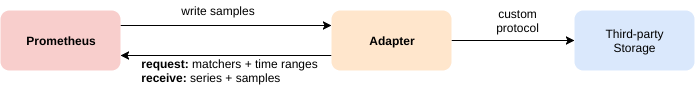

Prometheus includes a local on-disk time series database, but also optionally integrates with remote storage systems.
Local storage
Prometheus's local time series database stores data in a custom, highly efficient format on local storage.
On-disk layout
Ingested samples are grouped into two-hour blocks. Each block consists of a directory that contains a chunks subdirectory with all the time series samples for that time window, a metadata file, and an index file (which maps metric names and labels to the time series in the chunks directory). The samples in the chunks directory are organized into one or more segment files, each up to 512 MB by default. When series are deleted via the API, the deletion records are stored in separate tombstone files rather than being immediately removed from the chunk segments.
The current block for incoming samples is kept in memory and is not fully
persisted. It is secured against crashes by a write-ahead log (WAL) that can be
replayed when the Prometheus server restarts. Write-ahead log files are stored
in the wal directory in 128MB segments. These files contain raw data that
has not yet been compacted; thus they are significantly larger than regular block
files. Prometheus will retain a minimum of three write-ahead log files.
High-traffic servers may retain more than three WAL files in order to keep at
least two hours of raw data.
A Prometheus server's data directory looks something like this:
./data
├── 01BKGV7JBM69T2G1BGBGM6KB12
│ └── meta.json
├── 01BKGTZQ1SYQJTR4PB43C8PD98
│ ├── chunks
│ │ └── 000001
│ ├── tombstones
│ ├── index
│ └── meta.json
├── 01BKGTZQ1HHWHV8FBJXW1Y3W0K
│ └── meta.json
├── 01BKGV7JC0RY8A6MACW02A2PJD
│ ├── chunks
│ │ └── 000001
│ ├── tombstones
│ ├── index
│ └── meta.json
├── chunks_head
│ └── 000001
└── wal
├── 000000002
└── checkpoint.00000001
└── 00000000
Note that a limitation of local storage is that it is not clustered or replicated. Thus, it is not arbitrarily scalable or durable in the face of drive or node outages and should be managed like any other single node database. With proper architecture, it is possible to retain years of data in local storage.
Snapshots are recommended for backups. Backups
made without snapshots run the risk of losing data that was recorded since
the last TSDB block was created, which typically happens every two hours,
covering the last three hours of samples. Excluding the WAL files (the
chunks_head/, wal/, and wbl/ directories in storage.tsdb.path)
on backup or restore will ensure a coherent backup, in any case, at the
cost of losing the time range covered by the WAL files.
Alternatively, external storage may be used via the remote read/write APIs. Careful evaluation is required for these systems as they vary greatly in durability, performance, and efficiency.
For further details on file format, see TSDB format.
Compaction
The initial two-hour blocks are eventually compacted into longer blocks in the background.
Compaction will create larger blocks containing data spanning up to 10% of the retention time, or 31 days, whichever is smaller.
Operational aspects
Prometheus has several flags that configure local storage. The most important are:
--storage.tsdb.path: Where Prometheus writes its database. Defaults todata/.--storage.tsdb.retention.time: How long to retain samples in storage. If neither this flag norstorage.tsdb.retention.sizeis set, the retention time defaults to15d. Supported units: y, w, d, h, m, s, ms.--storage.tsdb.retention.size: The maximum number of bytes of storage blocks to retain. The oldest data will be removed first. Defaults to0or disabled. Units supported: B, KB, MB, GB, TB, PB, EB. Ex: "512MB". Based on powers-of-2, so 1KB is 1024B. Only the persistent blocks are deleted to honor this retention although WAL and m-mapped chunks are counted in the total size. So the minimum requirement for the disk is the peak space taken by thewal(the WAL and Checkpoint) andchunks_head(m-mapped Head chunks) directory combined (peaks every 2 hours).--storage.tsdb.wal-compression: Enables compression of the write-ahead log (WAL). Depending on your data, you can expect the WAL size to be halved with little extra CPU load. This flag was introduced in 2.11.0 and enabled by default in 2.20.0. Note that once enabled, downgrading Prometheus to a version below 2.11.0 will require deleting the WAL.
Prometheus stores an average of only 1-2 bytes per sample. Thus, to plan the capacity of a Prometheus server, you can use the rough formula:
needed_disk_space = retention_time_seconds * ingested_samples_per_second * bytes_per_sample
To lower the rate of ingested samples, you can either reduce the number of time series you scrape (fewer targets or fewer series per target), or you can increase the scrape interval. However, reducing the number of series is likely more effective, due to compression of samples within a series.
If your local storage becomes corrupted to the point where Prometheus will not start it is recommended to backup the storage directory and restore the corrupted block directories from your backups. If you do not have backups the last resort is to remove the corrupted files. For example you can try removing individual block directories or the write-ahead-log (WAL) files. Note that this means losing the data for the time range those blocks or WAL covers.
CAUTION: Non-POSIX compliant filesystems are not supported for Prometheus' local storage as unrecoverable corruptions may happen. NFS filesystems (including AWS's EFS) are not supported. NFS could be POSIX-compliant, but most implementations are not. It is strongly recommended to use a local filesystem for reliability.
If both time and size retention policies are specified, whichever triggers first will be used.
Expired block cleanup happens in the background. It may take up to two hours to remove expired blocks. Blocks must be fully expired before they are removed.
Right-Sizing Retention Size
If you are utilizing storage.tsdb.retention.size to set a size limit, you
will want to consider the right size for this value relative to the storage you
have allocated for Prometheus. It is wise to reduce the retention size to provide
a buffer, ensuring that older entries will be removed before the allocated storage
for Prometheus becomes full.
At present, we recommend setting the retention size to, at most, 80-85% of your allocated Prometheus disk space. This increases the likelihood that older entries will be removed prior to hitting any disk limitations.
Remote storage integrations
Prometheus's local storage is limited to a single node's scalability and durability. Instead of trying to solve clustered storage in Prometheus itself, Prometheus offers a set of interfaces that allow integrating with remote storage systems.
Overview
Prometheus integrates with remote storage systems in four ways:
- Prometheus can write samples that it ingests to a remote URL in a Remote Write format.
- Prometheus can receive samples from other clients in a Remote Write format.
- Prometheus can read (back) sample data from a remote URL in a Remote Read format.
- Prometheus can return sample data requested by clients in a Remote Read format.

The remote read and write protocols both use a snappy-compressed protocol buffer encoding over HTTP. The read protocol is not yet considered as stable API.
The write protocol has a stable specification for 1.0 version and experimental specification for 2.0 version, both supported by Prometheus server.
For details on configuring remote storage integrations in Prometheus as a client, see the remote write and remote read sections of the Prometheus configuration documentation.
Note that on the read path, Prometheus only fetches raw series data for a set of label selectors and time ranges from the remote end. All PromQL evaluation on the raw data still happens in Prometheus itself. This means that remote read queries have some scalability limit, since all necessary data needs to be loaded into the querying Prometheus server first and then processed there. However, supporting fully distributed evaluation of PromQL was deemed infeasible for the time being.
Prometheus also serves both protocols. The built-in remote write receiver can be enabled
by setting the --web.enable-remote-write-receiver command line flag. When enabled,
the remote write receiver endpoint is /api/v1/write. The remote read endpoint is
available on /api/v1/read.
Existing integrations
To learn more about existing integrations with remote storage systems, see the Integrations documentation.
Backfilling from OpenMetrics format
Overview
If a user wants to create blocks into the TSDB from data that is in OpenMetrics format, they can do so using backfilling. However, they should be careful and note that it is not safe to backfill data from the last 3 hours (the current head block) as this time range may overlap with the current head block Prometheus is still mutating. Backfilling will create new TSDB blocks, each containing two hours of metrics data. This limits the memory requirements of block creation. Compacting the two hour blocks into larger blocks is later done by the Prometheus server itself.
A typical use case is to migrate metrics data from a different monitoring system or time-series database to Prometheus. To do so, the user must first convert the source data into OpenMetrics format, which is the input format for the backfilling as described below.
Note that native histograms and staleness markers are not supported by this procedure, as they cannot be represented in the OpenMetrics format.
Usage
Backfilling can be used via the promtool command line. promtool will write the blocks
to a directory. By default this output directory is ./data/, you can change it by
using the name of the desired output directory as an optional argument in the sub-command.
promtool tsdb create-blocks-from openmetrics <input file> [<output directory>]
After the creation of the blocks, move it to the data directory of Prometheus.
If there is an overlap with the existing blocks in Prometheus, the flag
--storage.tsdb.allow-overlapping-blocks needs to be set for Prometheus versions
v2.38 and below. Note that any backfilled data is subject to the retention
configured for your Prometheus server (by time or size).
Longer Block Durations
By default, the promtool will use the default block duration (2h) for the blocks; this behavior is the most generally applicable and correct. However, when backfilling data over a long range of times, it may be advantageous to use a larger value for the block duration to backfill faster and prevent additional compactions by TSDB later.
The --max-block-duration flag allows the user to configure a maximum duration of blocks.
The backfilling tool will pick a suitable block duration no larger than this.
While larger blocks may improve the performance of backfilling large datasets, drawbacks exist as well. Time-based retention policies must keep the entire block around if even one sample of the (potentially large) block is still within the retention policy. Conversely, size-based retention policies will remove the entire block even if the TSDB only goes over the size limit in a minor way.
Therefore, backfilling with few blocks, thereby choosing a larger block duration, must be done with care and is not recommended for any production instances.
Backfilling for Recording Rules
Overview
When a new recording rule is created, there is no historical data for it.
Recording rule data only exists from the creation time on.
promtool makes it possible to create historical recording rule data.
Usage
To see all options, use: $ promtool tsdb create-blocks-from rules --help.
Example usage:
$ promtool tsdb create-blocks-from rules \
--start 1617079873 \
--end 1617097873 \
--url http://mypromserver.com:9090 \
rules.yaml rules2.yaml
The recording rule files provided should be a normal Prometheus rules file.
The output of promtool tsdb create-blocks-from rules command is a directory that
contains blocks with the historical rule data for all rules in the recording rule
files. By default, the output directory is data/. In order to make use of this
new block data, the blocks must be moved to a running Prometheus instance data dir
storage.tsdb.path (for Prometheus versions v2.38 and below, the flag
--storage.tsdb.allow-overlapping-blocks must be enabled). Once moved, the new
blocks will merge with existing blocks when the next compaction runs.
Limitations
- If you run the rule backfiller multiple times with the overlapping start/end times, blocks containing the same data will be created each time the rule backfiller is run.
- All rules in the recording rule files will be evaluated.
- If the
intervalis set in the recording rule file that will take priority over theeval-intervalflag in the rule backfill command. - Alerts are currently ignored if they are in the recording rule file.
- Rules in the same group cannot see the results of previous rules. Meaning that rules that refer to other rules being backfilled is not supported. A workaround is to backfill multiple times and create the dependent data first (and move dependent data to the Prometheus server data dir so that it is accessible from the Prometheus API).